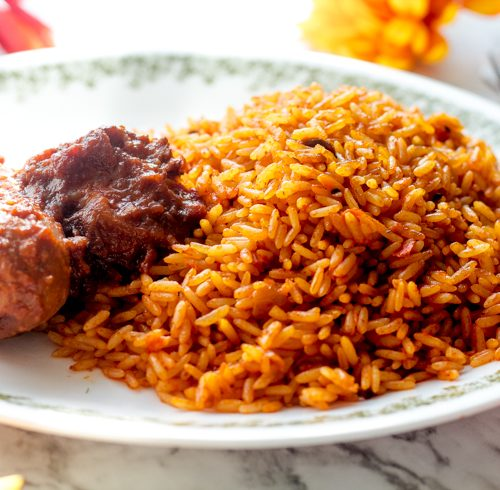
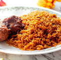
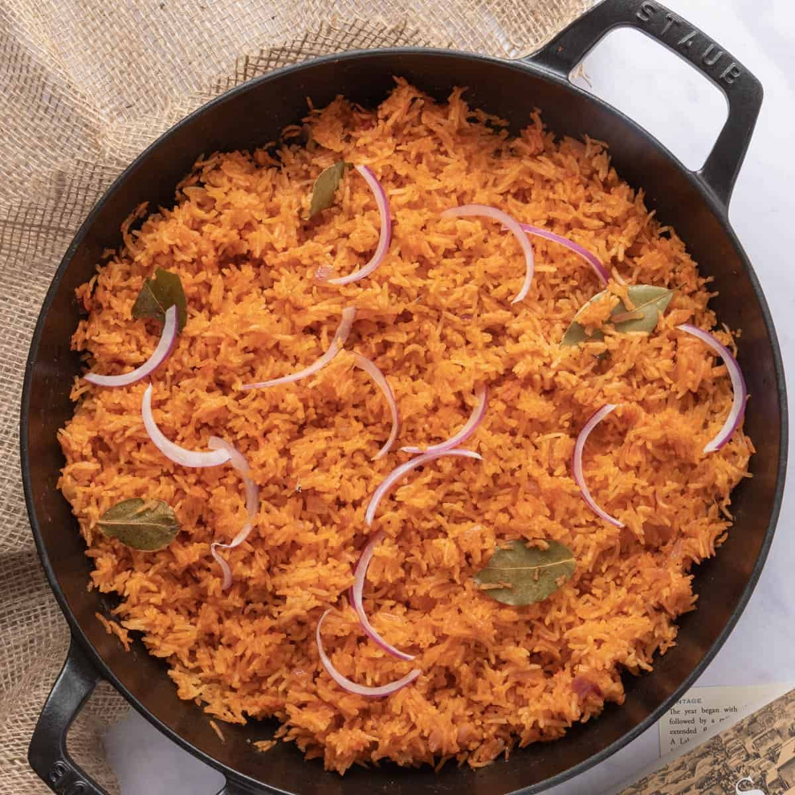

MY FAVOURITE MEAL
My favourite food is Jollof Rice
Jollof rice is one of the most common dishes in West Africa.
There are several regional variations in name and ingredients; for example,
in Mali it is called zaamè in Bamanankan. The dish's most common name of Jollof derives
from the name of the Wolof people,though in Senegal and Gambia the dish is referred to
in Wolof as ceebu jën or benachin. In French-speaking areas, it is called riz au gras. Despite the variations,
the dish is "mutually intelligible" across the regions and has become the best known African dish outside the continent
List of Ingredients
| Ingredients |
Measurements |
| Rice |
One Derica |
| Tomato |
3 balls |
| Onion |
1 ball |
| Red Pepper |
5 balls |
| Cooking Oil |
One satchet |
| Ginger |
One satchet |
| Garlic |
One satchet |
| Seasoning |
1 satchet |
Steps/Methods to Prepare
Blend your tomatoes, red pepper, scotch bonnet peppers in a
food processor or blender for about 45 seconds, make sure that everything is blended well
In a medium sized pot, heat your oil on medium-high heat. Once the oil is heated add the onions you set aside and fry just until they turn golden brown. Once the onions,
have turned brown in color add the tomato paste and fry for 2-3 minutes.
Then add the blended tomato mixture (reserve about 1/4 cup and set aside) and fry
the mixture with the onions and tomato paste for about 30 minutes.
Make sure you stir consistently so that the tomato mixture does not burn.
After 30 minutes, turn the heat down to medium, and add the chicken stock.
Mix and add your seasonings (salt, curry powder, thyme, all purpose seasoning, and the Knorr stock cube).
Continue to boil for 10 minutes.
Add the parboiled rice to the pot. Mix it very well with the tomato stew. At this point if you need to add water
so that the rice is level with the tomato mixture/chicken stock go ahead and do so. Cover the pot, and cook on
medium to low heat for 15-30 minutes.
When the liquid has almost dried up add the remaining tomato stew, cover, and let it cook for another 5-10 minutes heat until the liquid has completely dried up. Turn off the heat, mix thoroughly, and your Jollof Rice is ready to be eaten!


